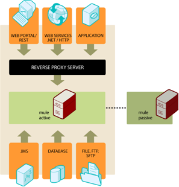

Mule High Availability (for Mule 3.1.x only) Enterprise Edition
Mule 3.1.x only!
The limitations and other information listed on this page apply to Mule 3.1.x ONLY, and are provided solely for the use of customers still running Mule 3.1.x. Nothing in this page applies to the current Mule version, or to any version 3.2.0 or later. If you are using Mule 3.1.x and wish to implement High Availability Clustering, MuleSoft strongly recommends that you first upgrade to the current version of Mule. For more information about the current state of Mule High Availability (as well as High Reliability, Performance, and Scalability), see [Mule High Availability (HA) Clusters].
|
Mule High Availability provides basic failover capability for Mule ESB. When the primary Mule instance become unavailable (e.g., because of a fatal JVM or hardware failure or it’s taken offline for maintenance), a backup Mule instance immediately becomes the primary node and resumes processing where the failed instance left off. After a system administrator has recovered the failed Mule instance and brought it back online, it automatically becomes the backup node. Seamless failover is made possible by a distributed memory store that shares all transient state information among clustered Mule instances. This can include information in SEDA service event queues and in-memory message queues. Mule High Availability is currently available for the following transports:
|
 |
Supported Architecture
Mule High Availability supports the following architecture:
-
Two Mule instances running standalone
-
Active-Passive topology: one primary node, one backup
-
Reverse proxy server (such as Apache) required for socket-based transports (HTTP, Web services, and TCP) to forward requests to the currently active node
-
Multicasting must be enabled on each server where Mule is installed
-
High Availability is not a replacement for transactions and does not guarantee reliability. If your message flow is not transactional, you will likely suffer from lost, partial, or duplicated messages in the case a failover should occur.
For details on specific features that are not supported in the current release, see Limitations below.
Enabling and Configuring Mule High Availability
You must have two identical Mule instances installed and configured: a primary instance and a backup instance. Although these instances could be on the same machine, they should ideally be separated (different machines in different physical locations) to avoid having a single point of failure.
Be sure to follow the steps in this section for both instances of Mule.
Configuring the System Properties
High Availability needs a few system properties set in order to start up. By default, these properties are commented out in your conf/wrapper.conf file. In order to enable High Availability, you can simply uncomment the properties in this file before starting Mule (it is not necessary to change their values). Note that the last one, mule.clusterNodeBackupId needs to be uncommented for all backup instances, but not the primary instance.
1
2
############################## High Availability settings#############################
wrapper.java.additional.4=-Dmule.clusterId=DEFAULTwrapper.java.additional.5=-Dmule.clusterNodeId=1wrapper.java.additional.6=-Dmule.clusterSchema=partitioned-sync2backup# Uncomment for all but one node in the cluster#wrapper.java.additional.7=-Dmule.clusterNodeBackupId=1#############################
|
Alternatively, you could set these properties from the command line when you start Mule, or set them in Java code if you start Mule programmatically. |
Modifying Your Configuration Files
To use the Mule High Availability capabilities, you must make some changes to your Mule XML configuration file(s).
|
Future versions of Mule will make High Availability more transparent, and the following changes to your configuration may no longer be necessary. The Mule Enterprise Migration Tool will help with any migration of configuration when this occurs. |
-
Import the "cluster" Namespace
1
<mule xmlns="...cut... xmlns:cluster="http://www.mulesoft.org/schema/mule/ee/cluster" xsi:schemaLocation=" ...cut... http://www.mulesoft.org/schema/mule/ee/cluster http://www.mulesoft.org/schema/mule/ee/cluster/3.1/mule-cluster-ee.xsd">
-
Replace
<service>elements with<cluster:service>
Before
1
<model name="ClusterExample"> <service name="Service1"> ...cut... </service> <service name="Service2"> ...cut... </service></model>
After
1
<model name="ClusterExample"> <cluster:service name="Service1"> ...cut... </cluster:service> <cluster:service name="Service2"> ...cut... </cluster:service></model>
|
A mixture of |
-
Replace the VM transport (connector and endpoints) with the Cluster transport
Before
1
<vm:connector name="queueConnector"/>...cut... <inbound> <vm:inbound-endpoint name="InQueue" path="queue.in" /> </inbound> <outbound> <pass-through-router> <vm:outbound-endpoint name="OutQueue" path="queue.out" /> </pass-through-router> </outbound>
After
1
<cluster:connector name="queueConnector"/>...cut... <inbound> <cluster:inbound-endpoint name="InQueue" path="queue.in" /> </inbound> <outbound> <pass-through-router> <cluster:outbound-endpoint name="OutQueue" path="queue.out" /> </pass-through-router> </outbound>
-
Replace VM transactions with Cluster transactions
Before
1
<vm:inbound-endpoint queue="InQueue"> <vm:transaction action="BEGIN_OR_JOIN"/></vm:inbound-endpoint>
After
1
<cluster:inbound-endpoint queue="InQueue"> <cluster:transaction action="BEGIN_OR_JOIN"/></cluster:inbound-endpoint>
| Only local transactions are supported with the Cluster transport at this time. XA transactions are not yet supported with the Cluster transport. |
Stateful Components
| This feature will be available in a coming release of Mule |
If your custom components are stateful (that is, they use variables to store information between messages/events) you must ensure that these variables are stored using the provided mechanism for distributed storage. Otherwise, this state information will be lost in the case of failover.
Running Mule High Availability
After you have enabled and configured High Availability as described above, start your Mule instances. They should now be running in high-availability mode, as you can verify from the splash screen at startup.
1
Application: default ** OS encoding: MacRoman, Mule encoding: UTF-8 * * Agents Running: ** High Availability mode is: PRIMARY * JMX Agent **
The primary instance will be fully started. The backup instance will be running, but its services will be stopped and therefore will not receive messages on any inbound endpoints. If the primary node should become unavailable, the backup node will become the primary node, causing its services to start and begin receiving messages from inbound endpoints. After a systems administrator is able to bring the failed instance back online, it becomes the new backup node (running but with its services stopped).
Example Application
A simple example application, Widget Factory, is provided with Mule Enterprise to illustrate the use of High Availability. This example is located in the directory examples/widget under your Mule home directory. Refer to the README.txt file in that directory for information on running the example.
Limitations to Mule High Availability for Mule ESB Version 3.1.x
-
Mule High Availability is designed to work with two identical Mule ESB instances. These instances must be configured identically.
-
Mule High Availability does not currently support Flows or Mule Configuration Patterns. However high availability can be achieved in flows by using transactions and a clustered JMS server. Please contact MuleSoft if you need further assistance.
-
Mule HA currently works only with single-application deployments. Note that this application can contain multiple Mule services.
-
The only transports currently supported by Mule High Availability are: JMS, JDBC, HTTP, File, and FTP. Asynchronous HTTP, Mail transports, and Streaming have some known compatibility issues and should not be used.
-
If a custom component is stateful (i.e., if variables are used to store information between messages/events), it will currently lose its state information after failover. Failover of stateful components will be supported in a future release of Mule.
-
Stateful routers such as the following may cause lost, partial, or duplicated messages after failover:
| XML Element | Class |
|---|---|
|
|
|
|
|
|
|
|
|
|
|
|
|
|
|
|
|
custom class |
Failover of stateful routers will be supported in a future release of Mule.
-
Unexpected behavior may occur with inbound JMS topics. JMS queues as well as outbound topics should work as normal.
-
Session-based information such as Security Context or Servlet Context and possibly HTTPS certificates will be lost after failover.
-
XA transactions are not yet supported with the Cluster transport. (Local transactions are fully supported.)
-
Lifecycle changes such as pausing or stopping services, connectors, or agents via Mule MMC will be lost after failover, and all entities will return to their default state, usually "started".
-
Schedules based on Quartz, such as receiver polling intervals and the Quartz transport, will restart after failover. Therefore, a single interval at less than the specified time period may occur.
-
Statistics collection such as message throughput is per Mule instance. Aggregate statistics will not be available after failover.
|
Transactions Mule High Availability is not a replacement for transactions. If your message flow is not transactional, you will likely suffer from lost, partial, or duplicated messages in the case a failover should occur. Transports that are not transactional for a single Mule instance (File system, FTP, HTTP) are still not transactional for Mule High Availability. |